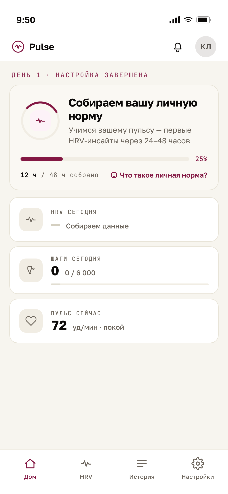
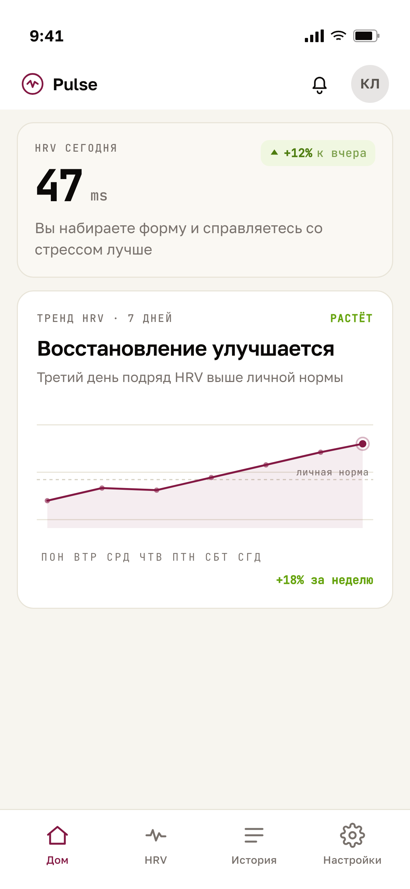
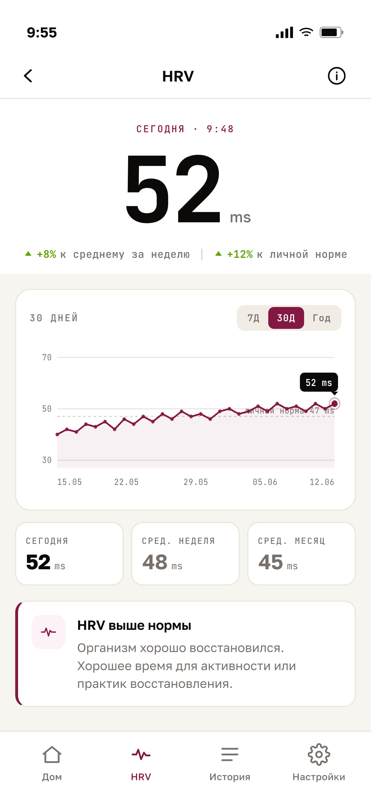
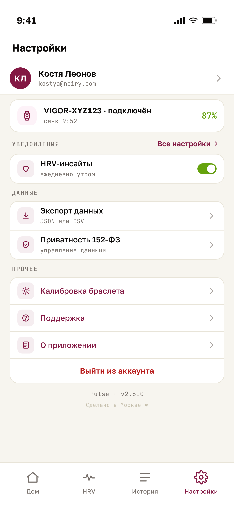

Neiry Pulse
·
MVP v.1
·
User Flow
23.06.2026

Step 1
Запуск / калибровка
Первые 48 часов: собираем личную норму HRV

Step 2
Главный экран
HRV, пульс и тренд восстановления каждый день

Step 3
HRV-анализ
Детальный график за 30 дней, личная норма, инсайты

Step 4
Настройки
Профиль, браслет, приватность 152-ФЗ, экспорт данных